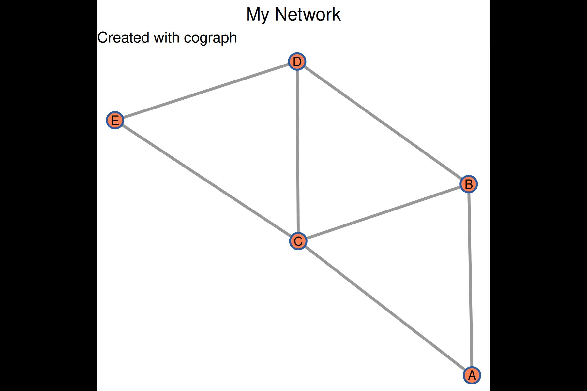
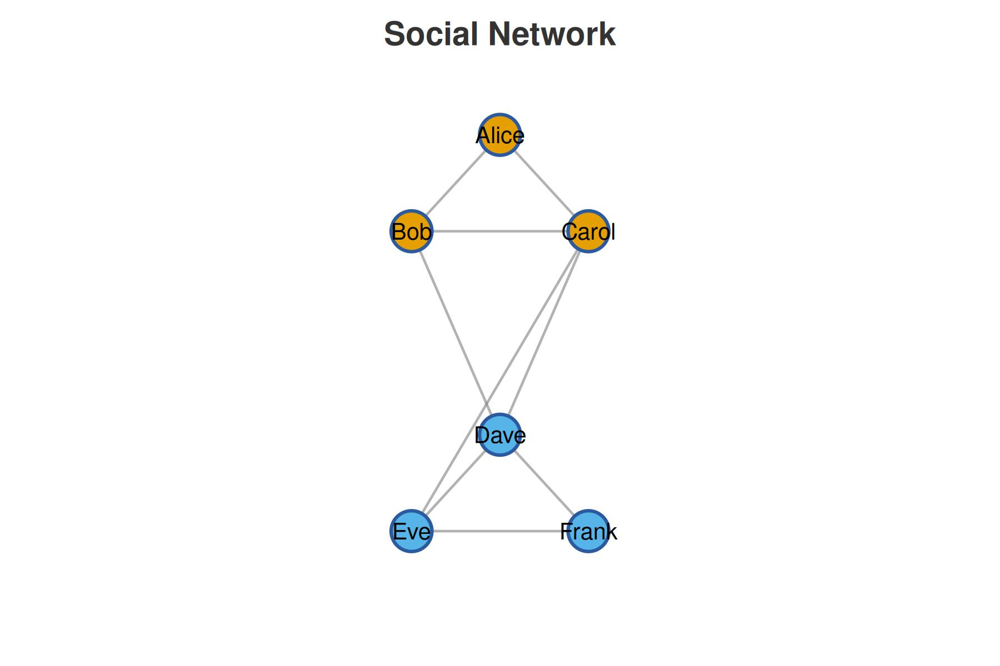

Overview
cograph is a modern R package for network visualization. It provides a clean, pipe-friendly API for creating publication-quality network plots.
Creating a Network
cograph accepts several input formats:
From an Adjacency Matrix
# Create a simple adjacency matrix
adj <- matrix(c(
0, 1, 1, 0, 0,
1, 0, 1, 1, 0,
1, 1, 0, 1, 1,
0, 1, 1, 0, 1,
0, 0, 1, 1, 0
), nrow = 5, byrow = TRUE)
# Add labels
rownames(adj) <- colnames(adj) <- c("A", "B", "C", "D", "E")
# Create and render
cograph(adj)
#> Cograph Network
#> ==============
#> Nodes: 5
#> Edges: 7
#> Directed: FALSE
#> Weighted: FALSE
#> Layout: computed
#> Theme: classic
#>
#> Use plot() or sn_render() to visualize
#> Use sn_ggplot() to convert to ggplot2From an Edge List
edges <- data.frame(
from = c("Alice", "Alice", "Bob", "Carol"),
to = c("Bob", "Carol", "Carol", "Dave"),
weight = c(1, 2, 1, 3)
)
cograph(edges)
#> Cograph Network
#> ==============
#> Nodes: 4
#> Edges: 4
#> Directed: FALSE
#> Weighted: TRUE
#> Layout: computed
#> Theme: classic
#>
#> Use plot() or sn_render() to visualize
#> Use sn_ggplot() to convert to ggplot2Layouts
cograph provides several layout algorithms:
Circular Layout
cograph(adj, layout = "circle")
#> Cograph Network
#> ==============
#> Nodes: 5
#> Edges: 7
#> Directed: FALSE
#> Weighted: FALSE
#> Layout: computed
#> Theme: classic
#>
#> Use plot() or sn_render() to visualize
#> Use sn_ggplot() to convert to ggplot2Force-Directed (Spring) Layout
cograph(adj, layout = "spring", seed = 42)
#> Cograph Network
#> ==============
#> Nodes: 5
#> Edges: 7
#> Directed: FALSE
#> Weighted: FALSE
#> Layout: computed
#> Theme: classic
#>
#> Use plot() or sn_render() to visualize
#> Use sn_ggplot() to convert to ggplot2Group-Based Layout
groups <- c(1, 1, 2, 2, 2)
cograph(adj) |>
sn_layout("groups", groups = groups)
#> Cograph Network
#> ==============
#> Nodes: 5
#> Edges: 7
#> Directed: FALSE
#> Weighted: FALSE
#> Layout: computed
#> Theme: classic
#>
#> Use plot() or sn_render() to visualize
#> Use sn_ggplot() to convert to ggplot2Customizing Nodes
cograph(adj) |>
sn_nodes(
size = 0.08,
shape = "circle",
fill = "steelblue",
border_color = "navy",
border_width = 2
)
#> Cograph Network
#> ==============
#> Nodes: 5
#> Edges: 7
#> Directed: FALSE
#> Weighted: FALSE
#> Layout: computed
#> Theme: classic
#>
#> Use plot() or sn_render() to visualize
#> Use sn_ggplot() to convert to ggplot2Per-Node Styles
cograph(adj) |>
sn_nodes(
size = c(0.05, 0.06, 0.08, 0.06, 0.05),
fill = c("red", "orange", "yellow", "green", "blue")
)
#> Cograph Network
#> ==============
#> Nodes: 5
#> Edges: 7
#> Directed: FALSE
#> Weighted: FALSE
#> Layout: computed
#> Theme: classic
#>
#> Use plot() or sn_render() to visualize
#> Use sn_ggplot() to convert to ggplot2Node Shapes
Available shapes: circle, square,
triangle, diamond, pentagon,
hexagon, ellipse, star,
heart, pie, cross.
cograph(adj) |>
sn_nodes(
shape = c("circle", "square", "triangle", "diamond", "star")
)
#> Cograph Network
#> ==============
#> Nodes: 5
#> Edges: 7
#> Directed: FALSE
#> Weighted: FALSE
#> Layout: computed
#> Theme: classic
#>
#> Use plot() or sn_render() to visualize
#> Use sn_ggplot() to convert to ggplot2Customizing Edges
Weighted Edges
For weighted networks, edge width and color can be mapped to weights:
# Create weighted adjacency matrix
weighted <- matrix(c(
0, 0.8, -0.5, 0, 0,
0.8, 0, 0.3, -0.7, 0,
-0.5, 0.3, 0, 0.6, -0.4,
0, -0.7, 0.6, 0, 0.9,
0, 0, -0.4, 0.9, 0
), nrow = 5, byrow = TRUE)
cograph(weighted) |>
sn_edges(
width = "weight",
color = "weight",
positive_color = "darkgreen",
negative_color = "darkred"
)
#> Warning: 'positive_color' is deprecated, use 'edge_positive_color' instead.
#> Warning: 'negative_color' is deprecated, use 'edge_negative_color' instead.
#> Cograph Network
#> ==============
#> Nodes: 5
#> Edges: 7
#> Directed: FALSE
#> Weighted: TRUE
#> Layout: computed
#> Theme: classic
#>
#> Use plot() or sn_render() to visualize
#> Use sn_ggplot() to convert to ggplot2Directed Networks
# Create directed network
dir_adj <- matrix(c(
0, 1, 1, 0, 0,
0, 0, 1, 1, 0,
0, 0, 0, 1, 1,
0, 0, 0, 0, 1,
0, 0, 0, 0, 0
), nrow = 5, byrow = TRUE)
cograph(dir_adj, directed = TRUE) |>
sn_edges(
curvature = 0.1,
arrow_size = 0.015
)
#> Cograph Network
#> ==============
#> Nodes: 5
#> Edges: 7
#> Directed: TRUE
#> Weighted: FALSE
#> Layout: computed
#> Theme: classic
#>
#> Use plot() or sn_render() to visualize
#> Use sn_ggplot() to convert to ggplot2ggplot2 Conversion
Convert your network to a ggplot2 object for additional customization:
library(ggplot2)
p <- cograph(adj) |>
sn_nodes(fill = "coral") |>
sn_ggplot()
p +
labs(
title = "My Network",
subtitle = "Created with cograph"
) +
theme(plot.title = element_text(hjust = 0.5))
Complete Example
# Social network example
social <- matrix(c(
0, 1, 1, 0, 0, 0,
1, 0, 1, 1, 0, 0,
1, 1, 0, 1, 1, 0,
0, 1, 1, 0, 1, 1,
0, 0, 1, 1, 0, 1,
0, 0, 0, 1, 1, 0
), nrow = 6, byrow = TRUE)
rownames(social) <- colnames(social) <-
c("Alice", "Bob", "Carol", "Dave", "Eve", "Frank")
groups <- c("Team A", "Team A", "Team A", "Team B", "Team B", "Team B")
social |>
cograph() |>
sn_layout("groups", groups = groups) |>
sn_nodes(
size = 0.06,
fill = ifelse(groups == "Team A", "#E69F00", "#56B4E9"),
border_width = 2
) |>
sn_edges(width = 1.5, alpha = 0.6) |>
sn_theme("minimal") |>
sn_render(title = "Social Network")
Next Steps
- Explore different layouts with
list_layouts() - Try different shapes with
list_shapes() - See available themes with
list_themes() - Check out the ggplot2 vignette for advanced customization